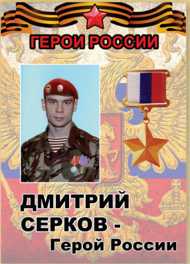
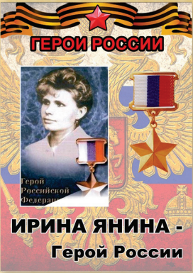
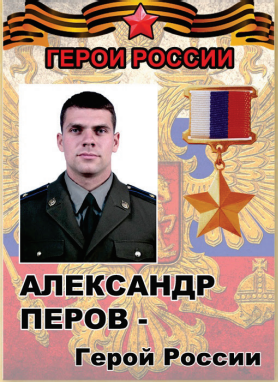
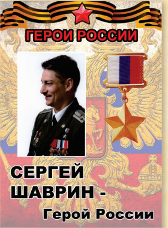
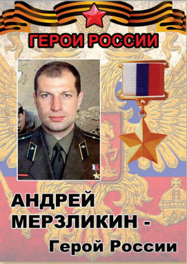
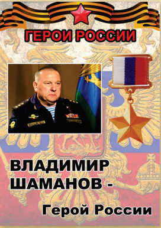
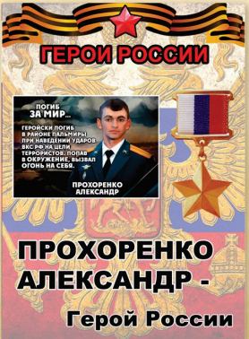
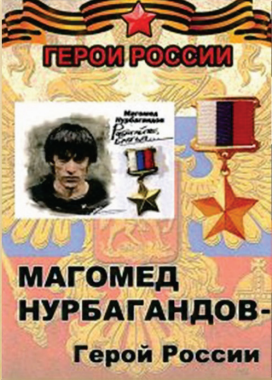

Наши Герои

ВИКТОР КУЗЬМИН
Виктора Кузьмина поднял на ноги старший брат Игорь Кузьмин, прославленный десантник, прошедший несколько войн. Витя был сыном полка и, конечно же, стал десантником. Он мечтал быть во всём похожим на брата, хотел иметь столько же наград и большую семью. За два дня до гибели он позвонил Игорю.

РУСЛАН ТРОЯН
28-летний ростовчанин не стал дожидаться повестки во время мобилизации и сам отправился в военкомат. Дома остались жена и маленькая дочь, которых он безмерно любил. Но он не мог оставаться дома, тяготился тем, что его умение там, в боях за свободу Донбасса, нужнее.

ЖУМАБАЙ РАИЗОВ
Обычный парень из Тюменской области Жумабай Раизов мог бы стать лучшим инструктором и тренером по спортивному туризму, но узнав про бомбёжку Донбасса, поступил в военное училище. Став командиром роты в легендарной Псковской дивизии, он пошёл освобождать Украину. В бою 26-летний офицер получил осколочное ранение. Истекая кровью, он остался на командном посту.

АЛМАЗ САФИН
Десантник погиб 14 января в бою, отразив несколько мощных контратак противника на Краснолиманском направлении. 17 января указом Владимира Путина Алмазу Сафину присвоили посмертно звание Героя России. У него остались дома жена и трое детей. О подвиге героя читайте в материале Царьграда.

АЛЕКСЕЙ ШЕВЧЕНКО
Алексею Шевченко отказали в призыве на срочную службу даже тогда, когда он похудел на 53 кг. На спецоперацию он решил идти добровольцем с казаками, но и атаман сначала отказал, но потом взял отчаянного парня "за ленточку". Через две недели молодой боец, будучи сам сильно ранен, вынесет командира на себе из-под огня в тяжелейшем сражении.

АЛЕКСЕЙ НАГИН
Алексей Нагин поистине был универсальным солдатом: снайпер, разведчик, сапёр, минёр, миномётчик. Из миномёта он мог попасть в окно с расстояния в пять километров. К своему 41-му году он не успел создать семью, так как постоянно был в командировках: Абхазия, Крым, Сирия, Ливия, Донбасс.

МАКСИМ СЕРАФИМОВ
В детстве Максим Серафимов был худеньким мальчиком, который к окончанию школы сумел стать кандидатом в мастера спорта по греко-римской борьбе. Он владел тремя языками, с блеском окончил Рязанское училище ВДВ и стал офицером ГРУ. В составе группы русских разведчиков старший лейтенант Серафимов принял бой в доме, окружённом со всех сторон нацистами.

ВЛАДИМИР СЕВЕР
Владимир и Виргиния Север вместе всего год, однако за это короткое время их любовь успела выдержать испытание, которое многим пережить будет не под силу. Невеста нашла жениха с тяжелейшими ранениями за 4,5 тысячи километров от дома в военном госпитале. Там они и поженились.
О подвигах Героев читайте в материале телеканала Царьграда. Источник: https://m.tsargrad.tv/ourheroes

Андрей Туркин
3 сентября боевая группа, в которую входил Андрей Туркин, работала в спортзале – именно
здесь они смогли пробиться внутрь, миновав шквальный огонь боевиков, которые расстреливали
все живое перед школой, как мишени в тире. Все его товарищи уже ранены. Самому Андрею
шальная пуля прилетела под бронежилет. Спецназовцы сделали попытку вывести людей из зала,
когда на них выскочил один из террористов. Короткий огневой контакт, и террорист скрылся за
укрытием. Когда он появился в следующий раз, в руках у него была граната, которую бандит уже
метил в людскую толпу.
Туркин поднялся из-за укрытия, бросился вперед и повалил террориста на землю, закрыв собой
гранату, которую тот держал в руке. Прогремевшего взрыва никто не услышал – так грамотно
сработал офицер.

Дмитрий Разумовский
3 сентября группа Разумовского осуществляла огневую поддержку штурма. Будучи командиром подразделения, он корректировал ведение огня, выявляя огневые точки противника и указывая на них. Позиция, выбранная Дмитрием, была идеальна для наблюдения – с нее он видел все. Проблема была только в том, что и его отлично видели все засевшие в школе террористы. Он фактически вызывал огонь на себя. На его группу обрушился шквальный огонь пулеметчиков и снайперов врага. И одна из пуль его «достала». Свинец пролетел в каких-то миллиметрах над пластиной бронежилета и поразил офицера. Он только и успел сказать «Меня зацепило, выносите». Разумовский тогда еще не знал, что ранение окажется смертельным.

Олег Ильин
3 сентября группе Олега Ильина была поставлена задача провести доразведку ситуации. С несколькими своими сотрудниками он находился буквально в паре шагов от школы, когда прозвучал взрыв и из здания начали выбегать дети. Спецназовцы просто не могли спасти ребятишек по-другому – они встали в полный рост под огнем боевиков, закрывая их своими телами и фактически вызывая огонь на себя. Заходя в здание школы, группа Ильина двинулась на второй этаж. К этому моменту все уже были ранены – Олег получил пулю в руку и осколочное ранение головы. Командование уже предлагало раненым офицерам возвращаться назад, но из боя никто сам не вышел.Группа боевиков предприняла попытку прорыва через боевые порядки спецназа, и Ильин стал той преградой, на которую напоролись негодяи. Он столкнулся с несколькими бандитами в ближнем бою и двоих оставил навсегда лежать на бесланской земле. Но силы уже покидали его, раненая рука отказывалась слушаться – террорист успел выстрелить в офицера, перед тем как тот нажал на спуск. Пуля оборвала жизнь спецназовца.

Роман Катасонов
3 сентября Роман Катасонов в составе одной из штурмовых групп зашел в школу. В одном из классов его группа обнаружила девочек-заложниц и попыталась их вывести через коридор. В этот момент по ним начал работать пулемет. Кинжальный огонь застал спецназовцев врасплох – оказаться в узком пространстве, без укрытия, под огнем ручного пулемета это, наверное, одна из худших ситуаций, в которую можно попасть в бою. Пытаясь подавить пулеметную точку, Роман выстрелил в сторону противника и двинулся в сторону спасительной двери класса, которая находилась менее чем в трех метрах от него – ему не хватило каких-то полшага – пуля сразила его, когда он уже почти ворвался в помещение.

Денис Пудовкин
3 сентября группа Дениса ближе всего находилась к школе. Вместе с товарищами ему определили участок работы на втором этаже. Он уже был ранен, в руку и в голову, но из боя не вышел – если спецназовец уходит, его задачи распределяются между оставшимися, и каждому становится немного тяжелее, а подводить товарищей Денис не привык. При выходе на точку его группа столкнулась с превосходящими силами противника, завязался скоротечный бой. Пудовкин в последний раз в жизни нажал на спуск автомата и уничтожил бандита, но тут же сам получил смертельное ранение.

Михаил Кузнецов
3 сентября, когда грянул взрыв, Михаил Кузнецов, как и все спецназовцы, ринулся к школе. Хотя его должность — сапер-взрывотехник — не подразумевала прямого участия в штурмовых операциях. Он должен был войти в здание только после того, как штурмовые группы уже отработали. Однако в тот момент было уже не до должностных обязанностей – нужно было спасти всех, кого успеешь. Михаил успел вынести из бесланского ада как минимум двадцать детей, пока пуля террориста не оборвала его жизнь. Когда начался спонтанный штурм, заложники стали выпрыгивать из окон. Окна спортзала в школах советской постройки расположены довольно высоко. Кузнецов словно из-под земли достал школьные парты и стулья и подставил под стены, не зря его прозвали «Домовым». Помогая выбираться детям, спецназовец продолжал вести бой, подавляя огневые точки боевиков. Перед смертью он успел уничтожить вражеского пулеметчика, но и сам получил тяжелое ранение. Пуля перебила артерию, спецназовец жил еще несколько часов и скончался в госпитале Владикавказа.

Олег Лоськов
3 сентября офицер вошел в захваченную школу и, как все его товарищи, отчаянно дрался за
жизнь детей. Прикрывая действия групп, Перов точными выстрелами поражал противника. Как
минимум одну огневую точку он уничтожил. Когда одна из групп заложников двинулась на выход,
на пол в нескольких метрах от людей глухо брякнулся металлический корпус гранаты. Размышлять
в таких ситуациях времени нет, и офицер антитеррора принял единственное верное решение –
спасать заложников.
Страшный взрыв посек его осколками, однако даже после этого мужественный майор не прекращал
руководить эвакуацией. Истекая кровью, он выполнил свой долг офицера до конца. От полученных
ранений Александр Перов скончался.

Вячеслав Маляров
Когда 3 сентября спецназ вошел в школу, Маляров, действуя внутри здания, смог отвести огонь
боевиков от помещения, где находилось несколько десятков заложников.
В ходе штурма вытащил из под огня раненого товарища, а потом оказывал огневую поддержку
другой группе – здесь то его и сразила вражеская пуля. В том бою он был без брони (как,
кстати, и многие другие спецназовцы). У Малярова на этот счет была своя философия – он
считал, что «его пуля его найдет» даже если он будет в бронежилете, а если не ему она
«предназначалась», то и броня не нужна…
О Подвиге Героев Спецназа ФСБ читайте в статье "Бислана. 10 героев спецназа" Источник: https://www.pravmir.ru/geroi-spetsnaza1/









